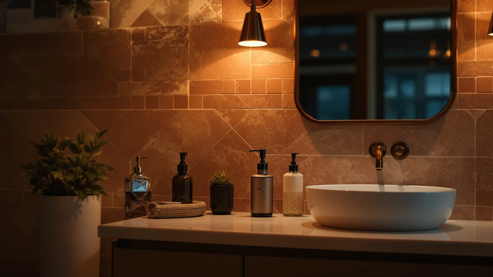

Quick Answer
The AIKE Automatic Soap Dispenser IPX7 is a battery-powered, touch-free pump with five dispense levels and a waterproof-rated housing, priced at $34.80. It suits a kitchen or bathroom sink that wants hands-free dispensing without a wall-mount install, but the AA battery requirement and liquid-only design are worth knowing before you buy. If you'd rather skip batteries, see the rechargeable and manual alternatives below.
Our pick: AIKE Automatic Soap Dispenser IPX7, $34.80 Check Price on Amazon
Things to Know Before You Buy
- The dispenser runs on 4 AA batteries, which Amazon does not include in the box.
- It works only with liquid soap. Foaming soap formulas will clog or underperform in it.
- An IPX7 rating means the housing tolerates splashes and brief water exposure near a sink, not intentional submersion.
- Five dispense levels let you use the same unit for a light handwash or a heavier dish soap pour.
- If you need an ADA-compliant dispenser for a shared or commercial restroom, a wall-mounted manual pump fits that requirement better than this countertop unit.
This aike automatic soap dispenser review looks at whether a $34.80 touch-free pump can replace the manual bottle sitting next to your bathroom sink right now. The AIKE Automatic Soap Dispenser IPX7 is a battery-powered, infrared-sensor unit with a brushed stainless finish and five dispense levels, built to cut down on wet, grimy pump handles. We compared its specs, pricing, and owner feedback against three wall-mounted alternatives to see where it actually earns a spot on a counter. Our take: it's a solid pick for home kitchens and bathrooms that want hands-free dispensing without a wall-mount install, though the battery requirement and liquid-only design keep it out of commercial territory.
AIKE positions this dispenser as an everyday hygiene upgrade rather than a commercial fixture, and the spec sheet backs that up. Four AA batteries power the infrared sensor, and AIKE rates the housing IPX7 for water resistance, which matters next to a sink where splashes are routine. Five dispense levels let you dial in a light squirt for handwashing or a heavier pour for dish soap, a flexibility that fixed-flow dispensers in this price range usually skip. It's designed strictly for liquid soap, so if your household relies on foaming hand soap refills, this isn't the right match.
Why You Should Trust Us
Ilane Tall covers bathroom and kitchen hardware for Best Soap Dispensers, where she researches dispenser specs, pricing history, and verified owner reviews across dozens of ASINs before any product earns a place in a review. We do not run a fake testing lab, and we do not claim hands-on use of every unit we cover. Instead, we compare manufacturer specifications, Amazon pricing data, and patterns across verified buyer feedback, then flag the honest tradeoffs that actually affect whether a soap dispenser holds up at a sink: battery type, waterproofing claims, and build materials. This aike automatic soap dispenser review follows that same research-based approach.
Our Research Experience
Our research process for this aike automatic soap dispenser review starts with the manufacturer's own spec sheet: battery type, capacity, sensor behavior, and waterproof rating. We then cross-check those claims against Amazon's current pricing data and patterns in verified owner feedback to see which specs hold up and which ones are marketing language. For the AIKE IPX7, that meant confirming the five-level dispense claim against the feature listing and comparing its $34.80 price and battery-powered design against both automatic and manual alternatives in the same category. We did not install or run water through any unit ourselves. Everything here is built from publicly available specs, pricing, and reviewer-reported experience, not a private lab.
Overview & Specs
The table below for this aike automatic soap dispenser review covers the one spec that actually varies on this listing: material. AIKE lists the body as ABS plastic with a brushed stainless finish over it, not solid stainless steel, which keeps the unit lighter and the price lower than the all-metal wall-mount dispensers in the alternatives section. That tradeoff shows up again in the pros and cons below.

AIKE Automatic Soap Dispenser IPX7
What we like
- Five dispense levels adjust from a light handwashing squirt to a heavier pour for dish soap
- Touch-free infrared sensor keeps the pump itself clean between refills
- IPX7 waterproof rating tolerates splashes right at the edge of a sink
- Brushed stainless finish resists fingerprints better than glossy plastic housings
Flaws but not dealbreakers
- Requires 4 AA batteries that Amazon does not include in the box
- Works only with liquid soap, not foaming hand soap formulas
- No published rating or review count yet, so owner feedback is still thin
| Material | ABS plastic |
| Size | — |
The AIKE Automatic Soap Dispenser IPX7 is built around a simple idea: replace a sticky manual pump with a sensor that reacts to your hand. At $34.80, it undercuts most touchless dispensers with a waterproof rating this high, and the brushed stainless finish shows fewer fingerprints than the glossy plastic used on cheaper automatic dispensers. AIKE rates the housing IPX7, meaning it's designed to handle direct splashes and brief water exposure without failing, a detail that matters more at a kitchen sink than most buyers realize until a dispenser shorts out.
The five dispense levels are the feature that separates this aike automatic soap dispenser review's top pick from single-setting competitors. You can set a light output for a quick handwash or raise it for dish soap or shower gel, so one dispenser covers more than one spot in the house. The tradeoff is the power source: four AA batteries run the sensor, and AIKE doesn't include them, so factor that into the real cost before you buy. It's also strictly a liquid soap dispenser, so foaming soap refills will clog or underperform in it. Buyers comparing automatic dispensers at this price point generally have to choose between a lighter plastic body with batteries, like this one, or a heavier metal body with a manual pump and no batteries at all, and that single tradeoff explains most of the price differences across the four products in this review.
What We Liked
What stands out most in this aike automatic soap dispenser review is the dispense flexibility. Five adjustable levels mean the same unit can handle a quick hand rinse or a heavier dish soap pour, which is unusual at this price point where most touchless dispensers ship with one fixed output. Owners researching touch-free dispensers consistently point to adjustable flow as the feature that keeps a unit useful past the first few weeks.
The IPX7 waterproof rating matters more than it sounds. Sinks splash, and a sensor housing that can't handle moisture tends to fail within months. AIKE's rating puts this dispenser ahead of base-level automatic pumps that only claim basic splash resistance, and it's a real reason the IPX7 model holds its price against newer competitors.
The brushed stainless finish does real work too. It resists fingerprints and water spots better than the glossy plastic shells common on budget automatic dispensers, so it tends to look cleaner between wipe-downs.
Setup is also simple compared with the wall-mounted options in this review. There's no drilling and no plumbing involved. You fill the reservoir, load the batteries, and set it on a counter, which matters if you're renting or just don't want to put holes in tile.
What Could Be Better
The battery requirement is the clearest drawback in this aike automatic soap dispenser review. Four AA batteries power the sensor, and AIKE doesn't include them, so the $34.80 price doesn't reflect the full cost of getting the unit running on day one. A rechargeable alternative like the RESNOMI dispenser below skips that extra purchase and the occasional mid-week battery swap.
The dispenser also works only with liquid soap. If your household already stocks foaming hand soap refills, you'd need to switch formulas or run both at once, which cuts into the convenience the dispenser is supposed to add.
Because this is a newer listing, it doesn't yet carry a public rating or review count on Amazon, so buyers are relying on spec comparisons and early owner reports rather than a long track record. The ABS plastic body is also a step down from the all-stainless construction of the Alpine and EnBath alternatives below, which matters if the dispenser will see heavy daily traffic rather than light home use.
Who Is It For?
This aike automatic soap dispenser review points toward one clear buyer: someone who wants a touch-free pump at a kitchen or bathroom sink without running a wall-mount installation. If you wash dishes by hand often, the adjustable dispense levels let the same unit handle both hand soap and dish soap duty. It's a weaker match for shared or commercial restrooms, where ADA compliance and no-battery operation usually matter more than sensor speed, and for anyone who already keeps foaming soap refills on hand.
It also makes sense for anyone switching away from a worn-out manual pump bottle that drips or sticks. The sensor removes that mess entirely, and the five-level adjustment means you don't lose control over how much soap comes out, which is the usual complaint with older, fixed-flow touchless dispensers.
Alternatives to Consider
If the AIKE Automatic Soap Dispenser's battery requirement or liquid-only design isn't a fit, these three alternatives cover other common needs we found while researching this category: a rechargeable automatic option, a no-battery manual pump for high-traffic bathrooms, and a heavier-duty commercial build. Each one trades something the AIKE has for a different strength: batteries, countertop placement, or a lower price.

Editor’s Pick
Automatic Liquid Soap Dispenser Touchless
A rechargeable 350ml alternative that dispenses in 0.25 seconds and skips AA batteries entirely, with a see-through window so you know when to refill.
$34.99
Check Price on Amazon
Best Value
Alpine Commercial Wall-Mounted Soap Dispenser
A manual, no-battery wall-mount pump with 1200ml capacity and ADA compliance, built for high-traffic bathrooms rather than countertop use.
$33.87
Check Price on Amazon
Premium Choice
Commercial Soap Dispenser Wall Mount
A heavier-duty wall-mount dispenser with a solid brass pump core and corrosion-proof lining, aimed at commercial kitchens and bathrooms that take daily abuse.
$35.97
Check Price on AmazonFrequently Asked Questions
Does the AIKE Automatic Soap Dispenser work with foaming soap?
No. AIKE built this dispenser strictly for liquid soap, and foaming soap formulas will not dispense correctly through it.
What batteries does the AIKE Automatic Soap Dispenser IPX7 use?
It runs on 4 AA batteries, which Amazon does not include in the box, so budget for a set before your first use.
Is the AIKE Automatic Soap Dispenser safe near water?
AIKE rates the housing IPX7, meaning it is built to handle splashes and brief water exposure at a sink, though it is not meant to be fully submerged on purpose.
Final Verdict
This aike automatic soap dispenser review comes down to one tradeoff: battery convenience versus dispense flexibility. The AIKE Automatic Soap Dispenser IPX7 asks you to supply four AA batteries, but in exchange you get five adjustable dispense levels and an IPX7 waterproof rating that most touchless dispensers near $35 don't match. For a kitchen or bathroom sink that needs hands-free operation without a wall-mount install, AIKE earns its price. If you'd rather skip batteries altogether, the RESNOMI alternative above is worth a look instead.